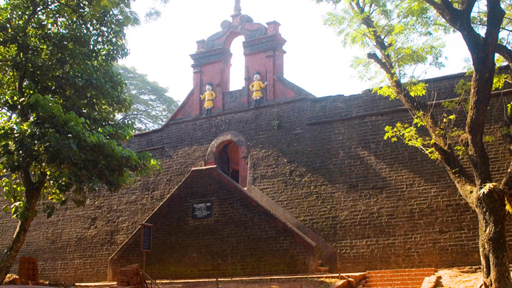

First slide label
Some representative placeholder content for the first slide.

Some representative placeholder content for the first slide.
Kannur is one among the northernmost districts in the south western state of Kerala in India.
The old name 'Cannanore' is the anglicised form of the Malayalam word Kannur. Kannur might have derived its name from one of the the Hindu diety, Kannan (Lord Krishna) and Ur (place) making it the place of Lord Krishna.
The deity of the Katalayi Sreekrishna temple was earlier situated in a shrine at Katalayi Kotta in the south eastern part of the Kannur town.
With the Western Ghats in the east and lakshadweep sea in the west, kannur district is bounded by a wealth of natural beauty. is blessed with natural beaches, hill stations, rivers, backwaters, historical monuments and religious centres.
The district itself which shares much of the natural splendour has been a key contributor to the cultural, religious, political and industrial heritage of the state.
In addition, Kannur enjoys the credit of having been the cradle of many a colourful folk art and folk music of Kerala.
Kannur is rightly described as “The land of Looms and Lores”. Kannur is well known for its handlooms. It is one of the major exporter handlooms in India.
The handloom cloths of Kannur have won international reputation. The industry was confined to the production of coarse varieties of dhoties and like, in the past.
Production of quality and exportable varieties of handloom fabric was started when the Basal Evengelical Mission entered the field.
The handloom industry, which was once the monopoly of private enterprise, has since been organised on co-operative lines.
It provides employment to hundreds of thousands of people directly and indirectly.
Kannur is rich in traditional art and culture. Kannur is the home of Kerala folklore academy. The gift of Kannur in the field of art and culture is its folk arts.
A large number of folk plays and dances are prevalent among the scheduled caster and tribes. Each tribe has its own glorious collection of folk plays and dances which are performed during festivals.
Theyyam or Theyattam is an ancient and still popular ritual dance. It’s a unique combination of dance, music and also reflects the main features of a tribal culture.
Theyyam is generally performed in front of the village shrines. There are a large number of temples in Kannur where Theyyam is performed.

Muzhappilangad Beach is famous for being Kerala's only drive-in beach. At about 7km from Thalassery in Kannur, you have a 4 km stretch of sand that awaits you to simply drive along as you soak in the view of the beautiful Malabar Coast.
read moreThalasseri fort at Kannur established by East India Company is a historical monument which stands as testimonial of colonial imperialism in Kerala, India.
read moreBuilt by the first Portuguese Viceroy in India, Don Francesco de Almeida (1505), St. Angelo’s Fort is among the most historic sites in Kannur.
read more